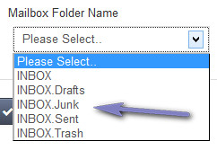
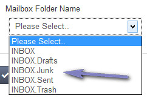

Add Account
Overview
Enables adding of imap account. Please read carefully. Click example images to display full size version in new tab/window.
Screenshot
{kind=link}
Mailbox - Main Options
Enable Imap Account - Enables imap account.
Mailbox Host / Mailbox Port - Mailbox host and port number. If you are unsure contact your mail provider.
Mailbox User - Mailbox username if authentication is required.
Mailbox Password - Mailbox password if authentication is required.
Mailbox Folder Name - Name of mailbox folder to read. MUST be correctly specified. Use the icon to access the mailbox. If your details are correct, a folder list will appear like the following:

Click to select correct folder. If folders can`t be read check your mail structure. Failure to specify the correct folder will result in the mailbox fetching no emails.
Mailbox Host / Mailbox Port - Mailbox host and port number. If you are unsure contact your mail provider.
Mailbox User - Mailbox username if authentication is required.
Mailbox Password - Mailbox password if authentication is required.
Mailbox Folder Name - Name of mailbox folder to read. MUST be correctly specified. Use the icon to access the mailbox. If your details are correct, a folder list will appear like the following:

{kind=link}
Click to select correct folder. If folders can`t be read check your mail structure. Failure to specify the correct folder will result in the mailbox fetching no emails.
Options
Accept Attachments - Do you wish to accept attachments? If enabled, same restrictions apply as main tickets in the settings.
Enable SSL - If your mailbox is being accessed over SSL, enable this option.
Mailbox Flags - Specify mailbox flags. If you don`t understand this, DO NOT change anything. Leaving this field blank can cause the mailbox to fail.
"/novalidate-cert" will be fine for most mail accounts and this is the default. More Info.
After Reading, Move Message to - If you prefer to move mail read to another folder, specify folder. Same rules apply as for "Mailbox Folder Name" above. If folder is NOT specified, mail is deleted after being read.
Maximum Messages to Fetch - Max amount of messages to fetch per read. Useful if you wish to restrict the amount of messages coming in at any one time. Set to high number for no real restrictions.
Enable SSL - If your mailbox is being accessed over SSL, enable this option.
Mailbox Flags - Specify mailbox flags. If you don`t understand this, DO NOT change anything. Leaving this field blank can cause the mailbox to fail.
"/novalidate-cert" will be fine for most mail accounts and this is the default. More Info.
After Reading, Move Message to - If you prefer to move mail read to another folder, specify folder. Same rules apply as for "Mailbox Folder Name" above. If folder is NOT specified, mail is deleted after being read.
Maximum Messages to Fetch - Max amount of messages to fetch per read. Useful if you wish to restrict the amount of messages coming in at any one time. Set to high number for no real restrictions.
Assign Preferences
Assign to Department - Specify department to assign tickets to for this mailbox.
Default Priority - Specify default priority.
Imap Reply-to E-Mail Address - Set imap reply-to address. This should always be the same as one of your imap mailboxes, so that replies get assigned to the same ticket when the mailbox is read. You can specify a different address if you prefer not to have messages go to the same imap folder.
Default Priority - Specify default priority.
Imap Reply-to E-Mail Address - Set imap reply-to address. This should always be the same as one of your imap mailboxes, so that replies get assigned to the same ticket when the mailbox is read. You can specify a different address if you prefer not to have messages go to the same imap folder.
Spam Filter
Enable Spam Filter - Enable spam filter for this mailbox. Can help detect imcoming spam. Adjust spam filter settings here.
Delete Spam Messages Immediately - If this is enabled, any messages flagged as spam will be auto deleted after the mailbox has finished being read. If disabled, tickets get put on hold in spam tickets. It is recommended you do NOT enable this unless you are 100% sure the spam filter is effective as many false positives may result in valid tickets being deleted.
If Deleting, Only Delete With Spam Score Greater Than or Equal To - If you have enabled the deletion option you can delete only messages that have a certain spam score or higher. This can help prevent false positives from being deleted. See the spam filter section for more information.
Delete Spam Messages Immediately - If this is enabled, any messages flagged as spam will be auto deleted after the mailbox has finished being read. If disabled, tickets get put on hold in spam tickets. It is recommended you do NOT enable this unless you are 100% sure the spam filter is effective as many false positives may result in valid tickets being deleted.
If Deleting, Only Delete With Spam Score Greater Than or Equal To - If you have enabled the deletion option you can delete only messages that have a certain spam score or higher. This can help prevent false positives from being deleted. See the spam filter section for more information.